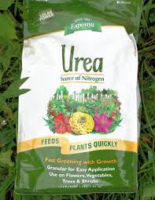

Back to home
WELCOME TO INTRANT SHOP
ANNOUNCEMENT
we work from monday to friday so,
our special objectives are to provide our client's services
and we have manures that used in crop development such as NPK,DAP, and UREA
NPK:An npk fertilizer is usually thought of as a chemical fertilizer, but npk applies to any soil amendment that supplies Nitrogen, Phosphorous, and K, Potassium, including organic fertilizers. The numbers are always in the same order, and refer to the percentage of each element in the fertilizer.
Diammonium phosphate (DAP) is the world's most widely used phosphorus fertilizer. It's made from two common constituents in the fertilizer industry, and its relatively high nutrient content and excellent physical properties make it a popular choice in farming and other industries.
Urea is an inexpensive form of nitrogen fertilizer with an NPK (nitrogen-phosphorus-potassium) ratio of 46-0-0. Although urea is naturally produced in humans and animals, synthetic urea is manufactured with anhydrous ammonia.
Thanks! 